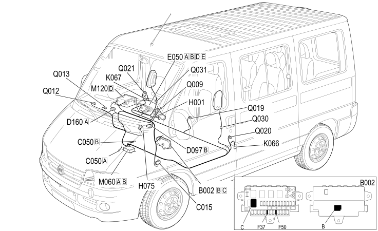

E7030 AIR BAG COMPONENTS LOCATION
- Path
- Electrical equipment > 1 ELECTRICAL FUNCTIONS > E70 VEHICLE ELECTRONIC SYSTEMS > E7030 AIRBAG > E7030 AIR BAG COMPONENTS LOCATION
- Kind
- topic
- Applies to
- all engines; all production periods
- Interactive page
- https://sloeber94.github.io/elrnDB-fDct/en/#/244002032
Applies to: all engines; all production periods

Component code | Description | Reference to the assembly |
|---|---|---|
JUNCTION UNIT UNDER DASHBOARD | - | |
DASHBOARD EARTH, DRIVER'S SIDE | - | |
AIR BAG SYSTEM EARTH | - | |
SHORT CIRCUITING COUPLING | - | |
DASHBOARD/OPTIONAL DASHBOARD COUPLING | - | |
INSTRUMENT PANEL | 5560B | |
IGNITION SWITCH | ||
PASSENGER AIR BAG DISABLING SWITCH | - | |
SENSOR FOR DRIVER'S SIDE BAG | - | |
SENSOR FOR PASSENGER SIDE BAG | - | |
AIR BAG CONTROL UNIT | - | |
Connect front panel | - | |
DRIVER'S AIR BAG | 5580C | |
PASSENGER AIR BAG (OUTSIDE) | - | |
PASSENGER AIR BAG (CENTRE) | - | |
CENTRE FRONT SEAT BELT PRETENSIONER | - | |
DRIVER'S SEAT BELT PRETENSIONER | - | |
FRONT PASSENGER SEAT BELT PRETENSIONER | - | |
DRIVER'S SIDE BAG | - | |
PASSENGER SIDE BAG | - |
Topics linked from this page (21)
- 5520A IGNITION SWITCH
- B002 JUNCTION UNIT UNDER DASHBOARD
- C015 DASHBOARD EARTH, DRIVER'S SIDE
- C050 AIR BAG SYSTEM EARTH
- D097 SHORT CIRCUITING COUPLING
- D160 DASHBOARD/OPTIONAL DASHBOARD COUPLING
- E050 INSTRUMENT PANEL
- H001 IGNITION SWITCH
- H075 PASSENGER AIR BAG DISABLING SWITCH
- K066 SENSOR FOR DRIVER'S SIDE BAG
- K067 SENSOR FOR PASSENGER SIDE BAG
- M060 AIR BAG CONTROL UNIT
- M120 Connect front panel
- Q009 DRIVER'S AIR BAG
- Q012 PASSENGER AIR BAG (OUTSIDE)
- Q013 PASSENGER AIR BAG (CENTRE)
- Q019 CENTRE FRONT SEAT BELT PRETENSIONER
- Q020 DRIVER'S SEAT BELT PRETENSIONER
- Q021 FRONT PASSENGER SEAT BELT PRETENSIONER
- Q030 DRIVER'S SIDE BAG
- Q031 PASSENGER SIDE BAG